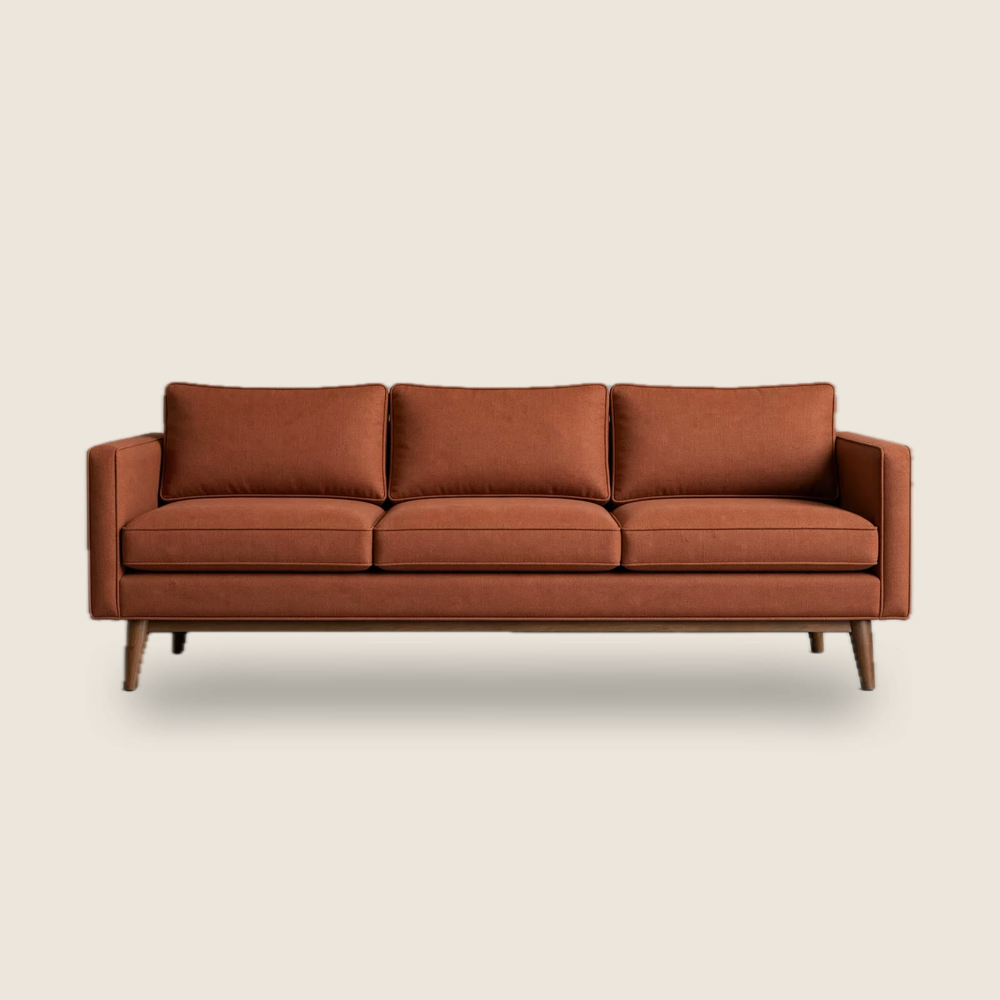

Do małego salonu wybierz sofę, która zajmuje najwyżej dwie trzecie ściany, stoi na widocznych nogach i ma siedzisko głębokie na 55 do 60 cm. Do tego jasna tkanina sprawdzona na próbce i zmierzona droga wniesienia. Po przeczytaniu będziesz wiedzieć, jak to wszystko zmierzyć w kwadrans, z miarką i kartką.
Piszę z perspektywy tapicerni. Co tydzień rozmawiamy z klientami, którym poprzednia sofa „zjadła” pokój albo nie przeszła przez drzwi. Te pięć kroków to lista, którą przechodzimy z nimi przez telefon.
Krok 1. Zmierz pokój i przejścia
Zacznij od planu, nie od zdjęć mebli. Narysuj pokój na kartce w skali i zaznacz drzwi, okna, grzejniki i miejsce na telewizor. Wokół sofy zostaw co najmniej 60 cm przejścia tam, gdzie ktoś chodzi, i około 40 cm między sofą a stolikiem kawowym.
Dopiero z tymi liczbami widzisz, ile miejsca naprawdę zostaje. W małym salonie często okazuje się, że sofa musi stanąć pod ścianą krótszą, niż zakładaliśmy.
Krok 2. Dobierz szerokość do ściany
Nasza zasada z pracowni: sofa zajmuje najwyżej dwie trzecie długości ściany, przy której stoi. Na ścianie 270 cm daje to około 180 cm. Większy mebel będzie wyglądał na wciśnięty, nawet jeśli fizycznie się zmieści.
- Do 14 m²: sofa dwuosobowa 150 do 170 cm i ewentualnie jeden fotel.
- 14 do 20 m²: sofa 180 do 220 cm albo dwuosobowa z fotelem.
- Powyżej 20 m²: możesz rozważyć narożnik, jeśli zamyka róg pokoju.
Masz ścianę krótszą niż 260 cm? Sofa Ola ma 165 cm szerokości i zaokrąglone boki, więc wizualnie zajmuje jeszcze mniej miejsca.
Zobacz sofy do małych salonówKrok 3. Sprawdź głębokość siedziska i nogi
W małym pokoju kusi płytka sofa, ale siedzisko poniżej 50 cm głębokości męczy po kwadransie. Szukaj 55 do 60 cm głębokości siedziska przy całkowitej głębokości mebla do 95 cm. Tyle wystarczy, żeby usiąść wygodnie i nie zabrać połowy pokoju.
Druga rzecz to nogi. Sofa na nogach wysokości 12 do 18 cm wygląda lżej, bo widać pod nią podłogę. Łatwiej też pod nią odkurzyć. Sofa postawiona bezpośrednio na podłodze optycznie zmniejsza pokój.
Krok 4. Wybierz kolor przy swoim świetle
Jasne tkaniny, piaskowe i kremowe, optycznie powiększają wnętrze. Kolor nasycony, jak rdza czy oliwka, też się sprawdzi, jeśli to jedyny mocny akcent w pokoju. Nie wybieraj koloru z ekranu. Monitor i telefon pokazują tkaninę inaczej niż Twoje okno o 17:00.
Zamów próbki i połóż je na sofie, którą masz teraz, rano i wieczorem. Sprawdź je przy podłodze i przy ścianie. Po dwóch dniach zwykle wiadomo, który kolor zostaje.
Krok 5. Zmierz drogę wniesienia
Najczęstszy problem przy dostawie to nie drzwi wejściowe, tylko drzwi do salonu i zakręt w korytarzu. Zmierz najwęższe przejście i porównaj z minimalną szerokością drzwi, którą podajemy przy każdej sofie. Sofa Lena potrzebuje 80 cm, bo nogi i oparcie odkręcamy przy wnoszeniu.
Jeśli masz wątpliwości, wyślij nam zdjęcie korytarza. Doradca sprawdzi to, zanim zamówisz. Jak wygląda samo wniesienie, opisujemy na stronie dostawa z wniesieniem i zwroty.
Częste błędy
- Narożnik w przejściowym pokoju. Blokuje drogę do balkonu albo kuchni. Lepiej sprawdzi się sofa dwuosobowa i fotel.
- Wybór koloru ze zdjęcia. Tkanina w Twoim świetle będzie inna, dlatego próbki są gratis.
- Pomiar tylko długości ściany. Głębokość mebla i miejsce na nogi decydują o wygodzie tak samo jak szerokość.
Kiedy ta lista nie wystarczy? Jeśli na sofie ktoś śpi codziennie, potrzebujesz mebla z pełnym materacem albo osobnego łóżka. Żadna z naszych sof nie zastąpi łóżka na co dzień i wolimy to powiedzieć wprost.
Najczęstsze pytania
Jaka szerokość sofy do pokoju 15 m²?
Zwykle 165 do 180 cm. Ostatecznie decyduje długość ściany: sofa nie powinna zajmować więcej niż dwie trzecie jej długości.
Czy narożnik pasuje do małego salonu?
Tylko wtedy, gdy narożnik zamyka strefę wypoczynku w rogu pokoju i nie blokuje przejścia. W przejściowym salonie lepiej sprawdza się sofa dwuosobowa i fotel.
Ile próbek tkanin mogę zamówić?
Do 6 próbek gratis. Przychodzą w 2 dni robocze.
Kasia, projektantka i tapicerka w pracowni Słoje
Od 9 lat dobiera proporcje i tkaniny naszych sof. Odpowiada za kolekcję sof i foteli.
Sofy z tego poradnika
Sofa Ola
Dwuosobowa, 165 cm, boucle, do małych salonów
4,8 na 5 (73 opinie)

-15%Sofa Lena
Trzyosobowa, 220 cm, pianka HR, nogi z litego orzecha
4,9 na 5 (128 opinii)

Fotel Lena
Do kompletu z sofą Lena, 85 cm, nogi z orzecha
4,8 na 5 (47 opinii)